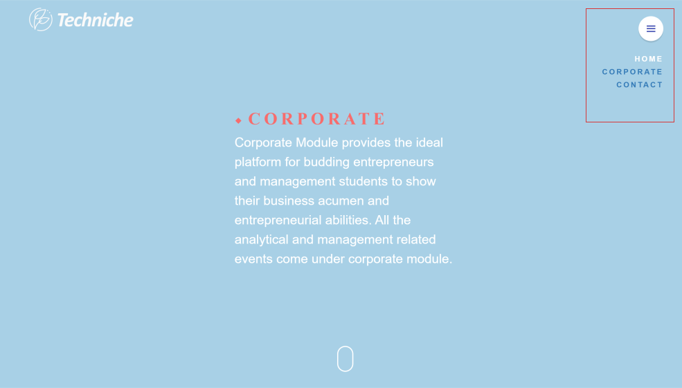
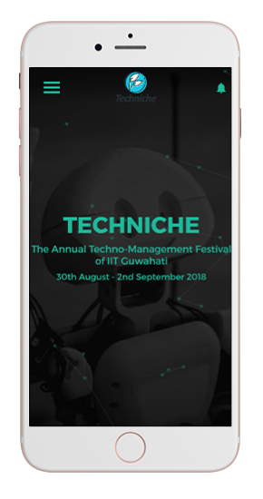
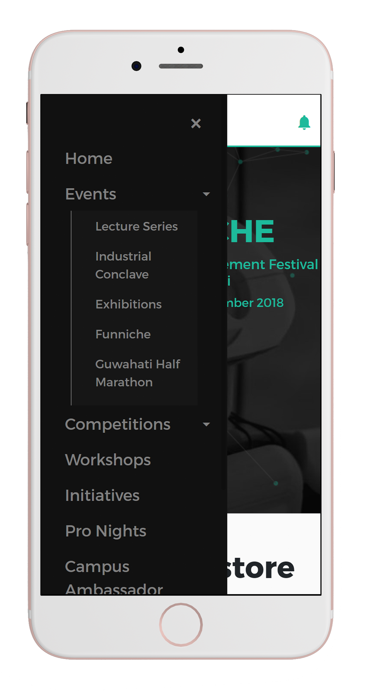
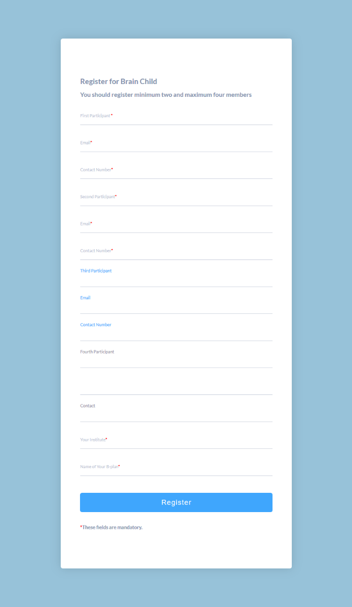
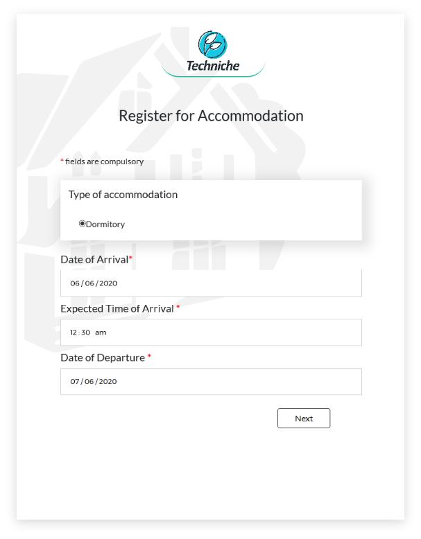

Increasing paid conversion through free Postman Trial Experience
Postman allowed free collaboration upto 3 team members. When users decide to collaborate with multiple people for the first time, they may invite more people than free plan allows. When that happens, we ask them to upgrade, and users cannot collaborate and experience the Product's value. This forces users to stick to 3 member teams at max until the team figures out whether they can successfully collaborate on Postman for their use, leading to a longer time in team expansion and upgrade.
My Role
I collaborated with Head of Growth and engineers to design the experience for the v1 and v2 of free trial experience. I was involved in deciding key decisions such as increasing trial period from 7 days to 14 days and also whether we should provide trials to professional plans as well. The experience was designed based on tech constraints highlighted during exploration sessions.
Project Timeframe : 3 weeks
Involved discussions, getting design requirements, designing the experience and doing a design review for developed experience before launching.
PS: We needed to move fast and we adopted a totally different process for product-design-engineering collaboration. Interested? Ask me about this :)
Hypothesis
By allowing more than 3 users to collaborate for a limited time, these teams will realise the collaborative value of Postman and thus increase the paid conversion rate.
Target Audience
Free multi member teams inviting more than 3 members.
Let's talk about users
Job to be done
When I am building an API, I want to collaborate with all relevant stakeholder on a single source of truth so that we can build the API as per business needs
User Goal
I want to ensure that our team will be able to actively collaborate on Postman, so that I can make smart choice of purchasing a paid plan.
Note: Majority of our users who would explore the trial capabilities were going to be a group of developers and Quality Engineers. If they could realise the value, they would definitely create a case for upgrades.
Key Decision for the project
There were two decisions where I contributed while defining the product spec. These were -
1. Increasing free trial duration from 7 days to 14 days
We made an educated guess based on data that inviting members, accepting those invites, getting onboarded and creation of collaborative files takes more than 7 days.
2. Default trial to team plan :
Based on data majority of free teams were not showing interest towards integrations and other features of paid plan. Their primary motivation was to collaborate. Basic plan can do that and defaulting it would increase trial opt ins as well as reduce the cost to company.
Ideation and Brainstorming
Key Tasks for a user in trial experience
Discovering trial plan is available
Explore the value addition of Postman for their work
Activate trials
Successfully engage and evaluate the offerings of free trial for their work.
Smooth upgrade or downgrade based on team purchasing decision.

Created this flow diagram so stakeholders can visualise, collaborate and align how trial experience would work. Early concept
Final Solution v1
Discovering trial experience was available
Postman had multiple entry points to invite people to a team. Designed experience based on each entry point as there were different tech constraints.
Case 1 : Initiating trial from existing workspace
Case 2 : Initiating trial while creating your 1st team workspace
Discovering trial experience was available
Postman had multiple entry points to invite people to a team. Designed experience based on each entry point as there were different tech constraints.
Techniche'18 Homepage allows users to browse through different types of activities based on their interest.
2. With the mobile-first approach, irrespective of device, it got easier to navigate. Every component excluded hover interaction, making it more usable on mobile. The side navigation allows easy navigation from one activity to any other, with three clicks at max.

Techniche home on mobile

Consistent nested navigation menu across devices
Responsive Version of Exploration Grid
3. Consistent design language made it easier to predict where to find the information on similar pages. Also, our efforts drastically reduced, and everything appeared as a part of a big home.
B. Registration Experience
1. Wherever possible, in consultation with event teams, the fields in forms were reduced to make registration quick. When form fields were needed, the form was segregated into sections to avoid overwhelming participants and losing registrations.

Form from Techniche 17
Step 1/3

Step 2/3
Step 3/3
2. We use 3rd party vendors for buying event tickets and payment handling. Their system required users to fill the form and then make payment. With form on our site, the user had to enter the same details twice. The marketing head and I discussed with our partner and developed a Techniche exclusive API allowing payment by filling one form on our site, saving effort and time.
Speeding Up With Internal Tools : Guwahati Half Marathon Case
1. For Guwahati Half Marathon, the BIB distribution, digital record of the BIB number against participant's name, and new registrations took more than 2 hours. It often resulted in a delayed start of the marathon.
2. I designed a mechanism that completed everything with 1.25 hours. Here's how we handled this challenge.
Listen to how this tool helped in the Missing Child Incident
Impact
30%
Increase in conversion to paid teams from baseline